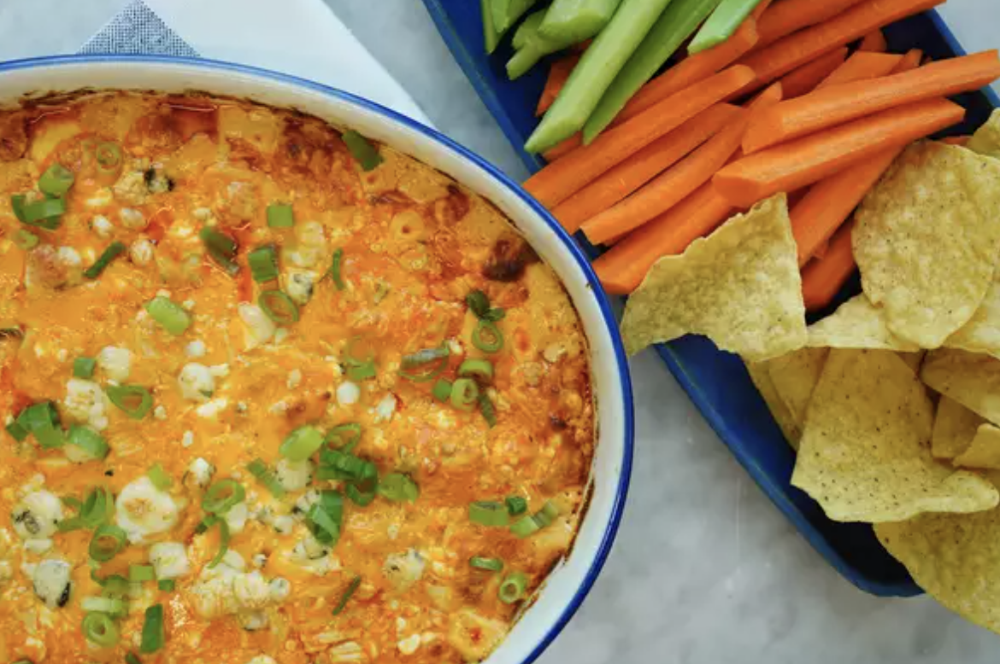

Buffalo Chicken Dip

Pace yourself
There are a lot of Buffalo chicken dip recipes but I feel certain this is one of the very best. Made with freshly cooked chicken, this is way better than recipes that call for the canned stuff. It's super rich and creamy with the perfect amount of tang. I highly recommend the optional blue cheese crumbles on top! Great served at room temperature so it's perfect for a party. Serve with celery and carrot sticks or corn chips.
3 (6 ounce) skinless, boneless chicken breast halves
1 teaspoon kosher salt
½ teaspoon ground black pepper
¼ teaspoon garlic powder
cooking spray
2 (8 ounce) packages cream cheese, softened
1 cup ranch dressing
1 cup hot sauce (such as Frank's RedHot ®)
1 ½ cups shredded Cheddar cheese
⅓ cup crumbled blue cheese
3 stalks green onion, green parts only, thinly sliced
Directions
- Preheat the oven to 350 degrees F (175 degrees C).
- Place chicken on a large sheet of foil and sprinkle evenly with salt, pepper, and garlic powder. Wrap foil around chicken to form a pouch, sealing it around the edges. Place foil pouch on a rimmed baking sheet.
- Bake in the preheated oven for 1 hour. Remove from the oven and let stand for 15 minutes to cool slightly.
- Meanwhile, increase oven temperature to 375 degrees F (190 degrees C). Lightly grease a baking dish with cooking spray.
- Stir together cream cheese, ranch dressing, and hot sauce in a large bowl until well combined.
- Roughly chop or shred cooked chicken. Add to cream cheese mixture along with Cheddar cheese; stir to combine. Pour mixture into the prepared baking dish and sprinkle with blue cheese.
- Bake, uncovered, until bubbly and golden around the edges, about 30 minutes. Remove from the oven and let stand for 10 minutes. Sprinkle with green onions and serve.